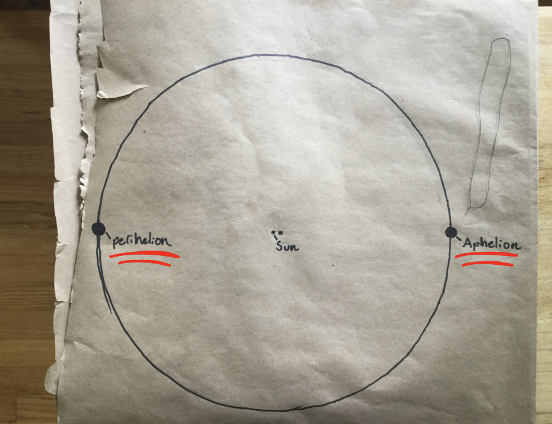
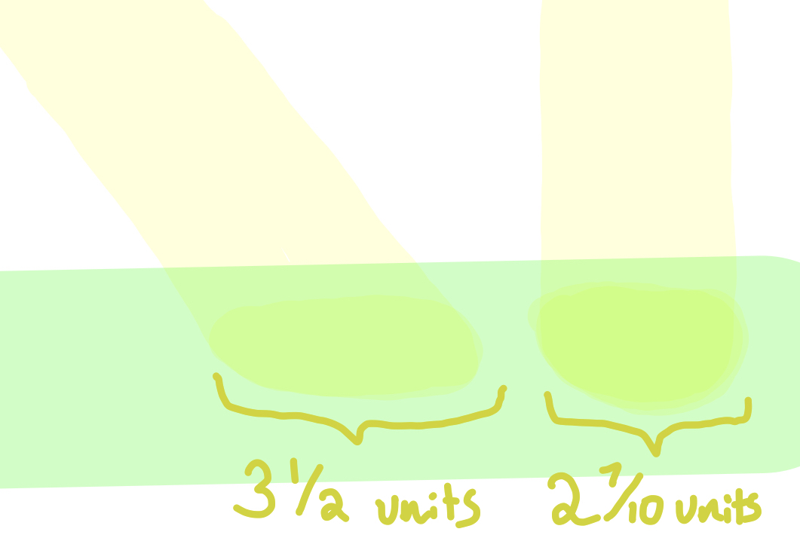

For the badge requirement 'circle the sun' I made a model of earth's orbit (the orbit is an ellipse) around the sun.

I made it by cutting a piece of string 30.4 cm long and tying it in a loop. Then, I stuck two pins in the paper .5 cm apart. Those would be the two foci of the ellipse. The leftmost one is the sun. Then, I put the loop around both of the foci and the pencil and pulled the pencil as far out as it could go. Finally, I dragged the pencil all the way around the two points.
On the diagram, there are two little circles. One says perihelion and one says aphelion.
Those are two different positions the earth can be in. The perihelion is the closest position to the sun, and the aphelion is the farthest from the sun.
In my model, The string is 30.4 cm long, the focal distance (the distance between the two foci) is .5 cm, the distance between the aphelion and the sun is 15.2 cm, and the distance between the perihelion and the sun is 14.7 cm. The scale for these measurements is 1cm = 10 million km.
Many people think that the earth being farther away from the sun is why there are seasons, but that is not why. It is because the earth's axis is tilted. When an amount of light hits the earth at an angle, it covers a large amount of space but isn't very warm. But when light hits the earth straight on, it covers a smaller area and is very warm. During the winter, the light hits the earth at an angle, which is why it is colder. During the summer, light hits the earth straight on, which is why it is warmer.
